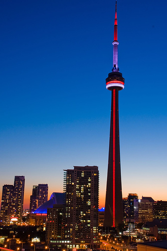

Toronto
The Megacity
HOME
Welcome to Toronto, Canada's largest city and the fourth most populous in North America. Toronto is the perfect location for anyone who seeks a strong career in business, finance, arts, or culture. It is my number one go-to Canadian city, for many reasons. My favourite place in Toronto would have to be the CN Tower. It symbolizes the city, along with the entire country of Canada so well and is a must-see location for any visitor.

GEOGRAPHY
Toronto's geography is very diverse. There are gentle hills, large valleys, massive lakes, and the city area is very flat. The city has a semi-continental climate, which means the summers will be warm and just like the rest of Canada the winters will be cold. There are several neighbourhoods as well, with distinct personalities. Although the city is massive, there are various ways to get around with the transportation methods available.
PEOPLE
If you're familiar with Toronto, then you're most likely aware of its huge population. It is the most populous city in Canada with over 6 million residents. The population is very multicultural. There are many immigrants who migrate here in Canada, most being from China, India, Phillippines, and several other countries. There are also notable figurese who are from Toronto. Overall, the citizens are generally nice.
ECONOMY
Toronto is famous for being a centre for finance and business. There are numerous opportunities out there. Many of Canada's biggest distributors are headquartered in Toronto, such as Bell Media, Rogers Communications, Hudson's Bay Company, and all five of Canada's largest banks. There are also television and film industries available, all being based in Toronto.
ATTRACTIONS
There are so many places to visit in Toronto. The city has something for everyone. Examples include the Royal Ontario Museum, the Toronto Zoo, the Ontario Science Centre, the CN Tower, and the Hockey Hall of Fame. There are also various sports games you can visit. The Toronto Islands is the perfect place for a family to enjoy themselves while in the city.